Inhalt Index DeskTop Bronstein

 Algebra und Diskrete Mathematik Klassische algebraische Strukturen Anwendungen von Gruppen Anwendungen in der Teilchenphysik
Algebra und Diskrete Mathematik Klassische algebraische Strukturen Anwendungen von Gruppen Anwendungen in der Teilchenphysik


Ersetzt man in (5.173) die Generatoren H1,H2 der CARTAN-WEYL-Basis für die LIE-Algebra su(2) durch die Operatoren
| 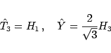 | (5.195) |
mit den Eigenwerten T3 und , wobei T3 die dritte Komponente des Isospins T und Y die Hyperladung (elektrische Ladung Q =T3+Y/2) bedeuten, dann erhält man für die Gewichte (5.175) der fundamentalen Darstellung D(1,0) von SU(3)
| 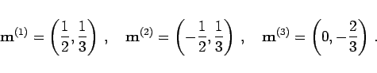 | (5.196) |
In der physikalischen Literatur bezeichnet man die Darstellung D(1,0) auch mit 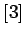, weil sie ein SU(3)-Multiplett mit 3 Basiszuständen repräsentiert. Um zu einer Klassifizierung der Hadronen (Mesonen, Baryonen) zu gelangen, identifiziert man diese Zustände mit den drei Quark-Flavour-Zuständen q =u,d,s (linke Abbildung).
Beim Übergang zu den Antiquarks 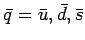 als den zugehörigen Antiteilchen entstehen Zustände mit entgegengesetzter Hyperladung und entgegengesetzter T3-Komponente des Isospins. Diese Zustände spannen die kontragradiente oder duale Darstellung (oder 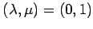) der Gruppe SU(3) mit den Gewichten
| 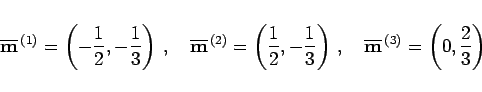 | (5.197) |
auf, wobei 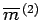 das höchste Gewicht ist (rechte Abbildung). (Die zu 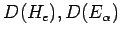 kontragradiente oder duale Darstellung erhält man durch den Übergang 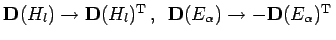.)
Gemäß Quarkmodell sind Baryonen aus drei Quarks zusammengesetzt. Baryonenzustände (qqq) transformieren sich als Tensoren 3. Stufe (s. Tensoren nter Stufe) in den Quarkzuständen, die sich nach dem direkten Produkt  (oder 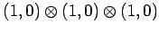) der fundamentalen Darstellung der Gruppe SU(3) transformieren. Die Dimension des Produktraumes ist 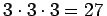. Eine Ausreduktion führt auf die CLEBSCH-GORDAN-Reihe
(oder 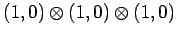) der fundamentalen Darstellung der Gruppe SU(3) transformieren. Die Dimension des Produktraumes ist 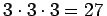. Eine Ausreduktion führt auf die CLEBSCH-GORDAN-Reihe
(oder 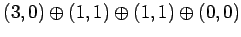), wobei [1] (oder (0,0)) die identische Darstellung mit T3 =Y =0 ist. Der Darstellungsraum zerfällt also in eine direkte Summe invarianter Unterräume mit der Dimension 10,8,8 und  . Damit erhält man die folgenden SU(3)-Flavour-Multipletts: ein Dekuplett, zwei Oktetts und ein Singulett. Die in den irreduziblen Darstellungen auftretenden Gewichte bestimmen die möglichen T3,Y-Quantenzahlen der Baryonen. Bei einer durch 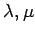 gegebenen irreduziblen Darstellung sind die folgenden Werte von Isospin T und Hyperladung Y möglich:
. Damit erhält man die folgenden SU(3)-Flavour-Multipletts: ein Dekuplett, zwei Oktetts und ein Singulett. Die in den irreduziblen Darstellungen auftretenden Gewichte bestimmen die möglichen T3,Y-Quantenzahlen der Baryonen. Bei einer durch 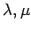 gegebenen irreduziblen Darstellung sind die folgenden Werte von Isospin T und Hyperladung Y möglich:
| 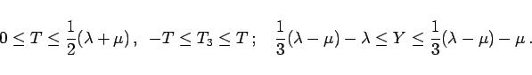 | (5.199) |
Für die in der Zerlegung (5.198) auftretenden Multipletts erhält man:
| 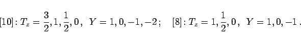 | (5.200) |
In der folgenden Abbildung ist das Dekuplett der Baryonen mit dem Spin I=3/2 angegeben. Die Resonanz repräsentiert den Zustand mit dem höchsten Gewicht.
Mesonen sind aus einem Quark und einem Antiquark aufgebaut. Mesonenzustände liegen somit im 9-dimensionalen Produktraum 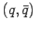; sie transformieren sich gemäß der Produktdarstellung  (oder 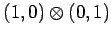), die nach der CLEBSCH-GORDAN-Reihe
(oder 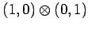), die nach der CLEBSCH-GORDAN-Reihe
| 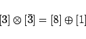 | (5.201) |
(oder 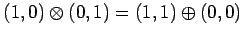) zerfällt. Die invarianten Unterräume bilden ein Oktett und ein Singulett. Den im Oktett enthaltenen Zustand T =Y =0 und den Singulettzustand T =Y =0 faßt man in einem Gewichtsdiagramm zusammen, da die in der Natur realisierten Zustände Mischungen der SU(3)-Multiplettzustände sind. Man erhält dann ein Nonett von Zuständen.
Die folgende Abbildung zeigt das Nonett der Vektormesonen mit dem Spin . Das 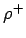-Meson (T=1,T3 =+1) repräsentiert den Zustand mit dem höchsten Gewicht. Es ist Teil eines Isospinmultipletts, zu dem noch das 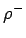-Meson (T=1,T3 =-1) und das 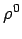-Meson (T=1,T3 =0) gehören. Die physikalischen 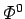- und  -Mesonen sind Überlagerungen der SU(3)-Zustände (T=Y=0) des Oktetts 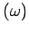 und des Singuletts 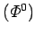.
-Mesonen sind Überlagerungen der SU(3)-Zustände (T=Y=0) des Oktetts 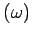 und des Singuletts 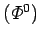.